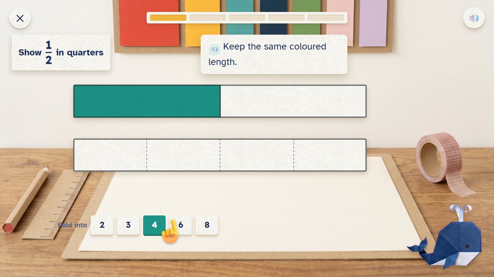
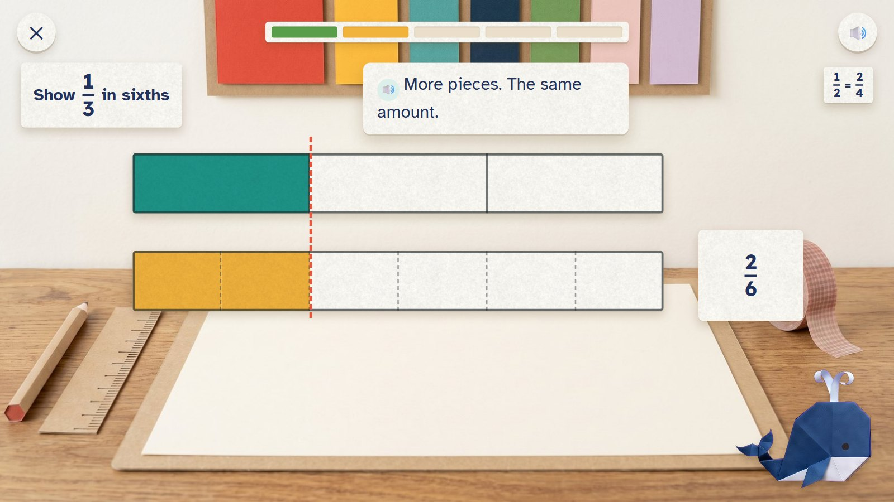
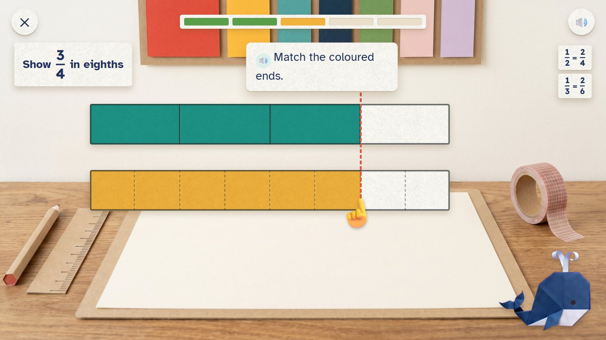
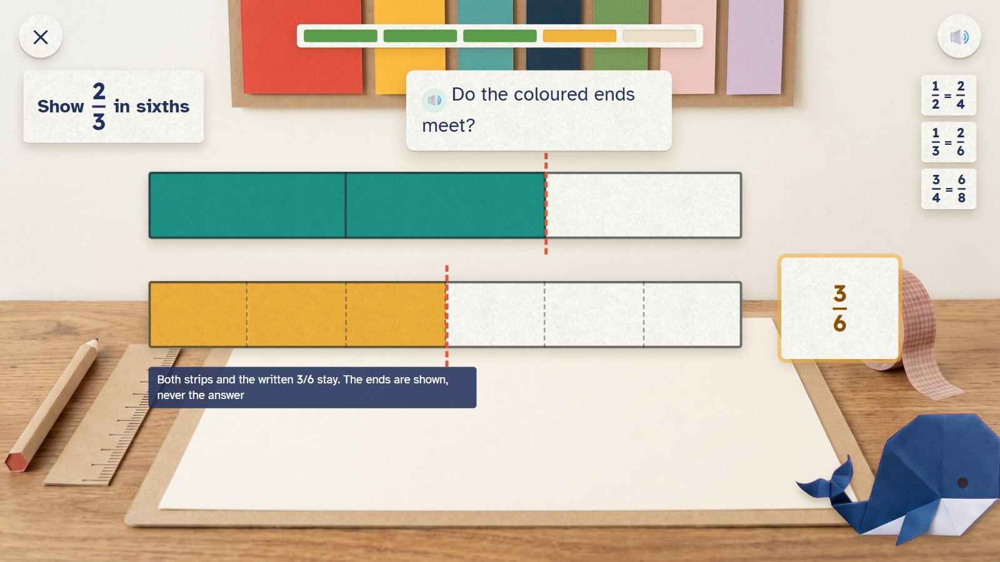
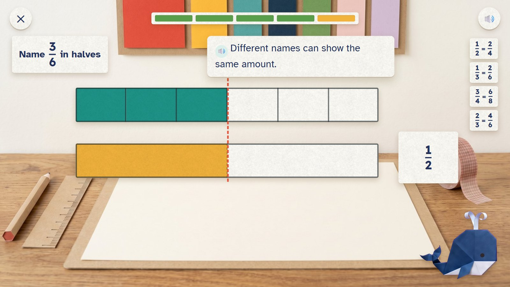
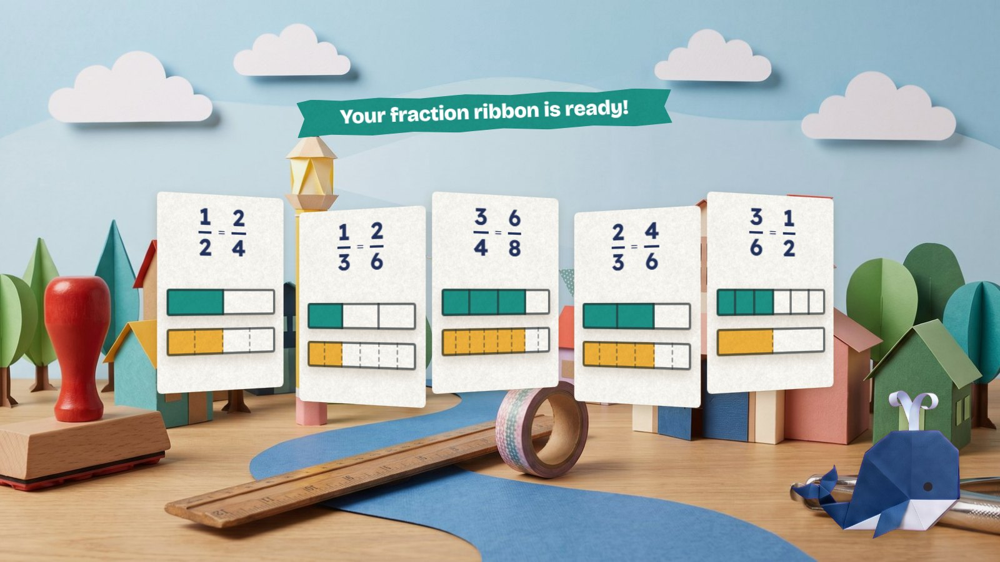

Welu is making a ribbon of fraction panels for the town display. Two strips of the same length lie with their ends lined up. The child folds the lower strip into the parts asked for, colours parts until the coloured ends meet, and names the fraction. The coloured length never changes; only its name does.
Grades 3–4 · ages 8–10 E19 Fraction exchange + E17 Equal cuts paper move: fold, colour, line up
Skill: Rename equivalent fractions, keeping the same whole. Host: Welu the whale. One activity is 5 rounds, about two minutes.
A fold doubles the pieces but keeps the amount, and the coloured ends line up.
Fixed. Both strips, the same length, are always in view.
The five panels open into one accordion ribbon on Welu's display (2.5 seconds).

A half-coloured strip above a blank strip of the same length. The child folds the blank one into 4.
🔊 Keep the same coloured length.

The first panel is done (right). Two sixths reach exactly as far as one third.
🔊 More pieces. The same amount.

Six eighths coloured; the ends meet at the dashed line.
🔊 Match the coloured ends.

Two thirds named as three sixths. The coloured ends do not meet; both strips and the written 3/6 stay.
🔊 Do the coloured ends meet?
The ends are shown, never the answer.

Fixed: 4/6. Now three sixths renamed in halves: one half.
🔊 Different names can show the same amount.

Five panels open into one accordion ribbon for Welu's town display.
🔊 Your fraction ribbon is ready!
Mock-ups: Gemini's paper pictures (scenes, friends, props) with the maths pieces drawn by code, as the app would draw them. In the app everything moves; here it stands still.
| Round | Task |
|---|---|
| 1 | 1/2 in quarters: 2/4 |
| 2 | 1/3 in sixths: 2/6 |
| 3 | 3/4 in eighths: 6/8 |
| 4 | 2/3 in sixths: 4/6 |
| 5 | 3/6 in halves: 1/2 |
This is one activity card. The skill's five steps (see it, fill one part, on your own, check it, word problem) are five different cards made from the same engine. Stars count first tries only: 5 of 5 = 3 stars, 4 = 2, 3 = 1.
| Mistake | Looks like | What happens (never red, never "wrong") |
|---|---|---|
| Keeping the top number | 2/3 becomes 2/6 | "Do the coloured ends meet?" |
| Parts not equal | folds a strip unevenly | folds always make equal parts; the tip is about the number of parts |
| Counting the wrong parts | names the uncoloured part | "Which part is coloured?" |
| A different whole | compares strips of different lengths | never happens: both strips always have the same length |
Test robot: Works out the equivalent fraction from the question, folds into that many parts, colours the right number and names it. Once it keeps the top number, to check the tip.